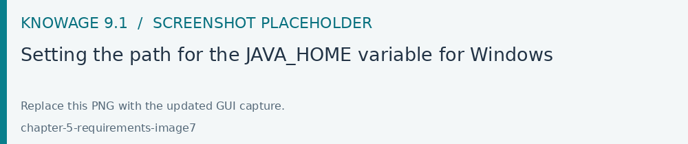

Requirements
This page describes deployment requirements for Knowage 9.1.0. The versioned application source and public Docker recipe were checked on 19 October 2026. A version found in a recipe identifies its baseline; it does not certify every OS, database version or later component release.
Core runtime
Component |
Version or requirement |
Deployment notes |
|---|---|---|
Java |
JDK 17 |
The release compiles for Java 17. The Docker recipe uses Eclipse Temurin 17. Use a maintained JDK 17 distribution. |
Application server |
Apache Tomcat 9.0.x |
The public recipe pins 9.0.109. Select a maintained 9.0.x patch accepted for your deployment and validate it with the applications. |
Metadata database |
MySQL/MariaDB, PostgreSQL or Oracle |
Vendor-specific creation and upgrade scripts are supplied. Exact database versions must be qualified with those scripts. |
SQL cache database |
A separate schema/database and JDBC resource |
Configure |
Distributed cache |
Hazelcast 5.3 integration |
The Java dependency is 5.3.6. The public Compose example starts a separate Hazelcast 5.3 service. Preserve the topology and configuration supplied with your deployment. |
Client |
A supported web browser |
See Supported browsers below. |
The Java applications use the javax.servlet API. Tomcat 10 and 11 use the
Jakarta namespace and are not direct replacements for the Tomcat 9 deployment.
Follow Manual installation for the required shared
libraries, JNDI resources and application packages.
Operating systems
Use an OS supported by the selected JDK 17, Tomcat 9 and any native export or analytics services. For contractual support, confirm the exact OS release and architecture against the matrix supplied with your Knowage 9.1 distribution.
The public manual declares the following environments. These declarations are retained from the published documentation; this source review does not constitute a new certification test.
Published status |
Operating system |
Published versions |
|---|---|---|
Certified |
Oracle Linux |
9, 10 |
Certified |
Windows Server |
2022, 2025 |
Compatible |
Red Hat Enterprise Linux |
10 |
Compatible |
Ubuntu |
22, 24, 25; exact point releases are not specified |
Here, certified denotes an environment declared as tested by the publisher; compatible denotes technical compatibility without the same integration-test claim. An OS family entry does not establish its vendor maintenance status. Confirm the exact Ubuntu release before provisioning.
CPU, memory and storage
The public 9.1 release sources and Docker recipes do not specify a verified minimum CPU count or RAM allocation. Size the application, database, Hazelcast and optional services for the intended workload.
The earlier 2 GB disk figure describes an installation footprint and excludes data and metadata. It is not a complete production storage requirement. Provide capacity for deployed WARs and their expanded contents, shared resources, uploaded files, JDBC drivers, logs, temporary exports, SQL cache, database growth and backups.
Validate sizing with representative concurrent users, dataset sizes, dashboard queries and scheduled exports. Set JVM heap and container limits consistently, leaving memory for the OS, native processes and other services sharing the host. Measure peak memory and temporary-disk use during exports and Data Preparation.
Java environment
Install a JDK 17 and set JAVA_HOME for the account that runs Tomcat.
An interactive shell and an OS service may have different environments.
On Linux, configure Tomcat’s bin/setenv.sh or the service environment,
using the actual installation path:
export JAVA_HOME="/path/to/jdk-17"
export PATH="$JAVA_HOME/bin:$PATH"
Verify the selected runtime:
java -version
javac -version
Both commands must report version 17. Check Tomcat’s startup log as well.
On Windows, configure JAVA_HOME and PATH. If Tomcat runs as a Windows
service, also check the Java runtime selected in the service configuration.

Fig. 710 Configuring JAVA_HOME on Windows; replace this placeholder with the target environment screenshot.
Databases and JDBC
Prepare the metadata and SQL cache schemas before starting Knowage. The application account must be able to reach both JDBC resources. Install the drivers and configure Hibernate and Quartz for the chosen DBMS.
The public Docker recipe exposes MYSQL, MARIADB, POSTGRES and
ORACLE as metadata/cache database types. This establishes integrations,
not a database-version certification matrix. A business data source is a
separate connection: its drivers and SQL dialect do not establish support
for using it as the metadata database.
Important
The public Compose example still uses MariaDB 10.3, whose upstream maintenance ended on 25 May 2023. Do not use this example as the database version recommendation for a new production deployment. Obtain the qualified database version and JDBC driver combination for your 9.1 package.
Review creation and migration scripts against the exact target database.
The tagged PostgreSQL scripts contain legacy WITHOUT OIDS syntax and
the Oracle migration uses SQL BOOLEAN. Their compatibility depends on
the server version; do not infer it from a driver version.
See Upgrade Knowage 9.0 to 9.1 before upgrading.
Optional services
Install these components for the features enabled in your edition and deployment.
Python datasets, functions and widgets
These features require a separate Knowage Python web service and the libraries used by the scripts. Use the service package associated with Knowage 9.1.0; its Python package version need not equal the platform version.
The tagged package declares Python >=3.7, but that lower bound does not
establish compatibility with every newer interpreter. Its dependency file still
pins, among others, Flask 1.1.4 and pandas 1.3.5. The public Python base-image
source uses Python 3.8; check the referenced built image separately for its
actual interpreter and digest.
Python 3.8 reached upstream end of life on 7 October 2024. For a new deployment, obtain a service build with a maintained, qualified interpreter and matching dependencies. Do not independently replace the interpreter or upgrade all libraries and assume compatibility. See Python Engine.
Enterprise export service: Node.js and Chromium
Some Enterprise export services require Node.js, a browser automation package and Chromium. Use the versions, browser binary and OS dependencies supplied with the 9.1 Enterprise export package.
The public Java release and Docker recipe do not establish the exact supported Node.js/Chromium pair for that private package. The Node.js version in a frontend build workflow is not an export-service requirement.
Verify the binaries as the export-service account, configure the export script path in Configuration Management and test the PDF/image formats used by users:
node --version
npm --version
Install native browser libraries using the package list for the actual host OS and Chromium build. Earlier CentOS 8/Red Hat 7 commands and package names must not be reused as a universal installation recipe.
Fonts and server-side rendering
Install fonts covering the languages used in reports, charts and exports. Make them available to both Java and Chromium service accounts. Use explicit font package names from the host OS repositories and verify accented, CJK or other required scripts in an exported document.
Data Preparation
Data Preparation requires the appropriate add-on and a Livy/Spark service
with integration libraries matching the supplied Knowage package. The 9.1
Java source pins livy-client-http 0.7.1-incubating; this client dependency
does not certify arbitrary Livy, Spark or Scala server versions.
Confirm the complete integration tuple with your distribution and follow Manual installation to configure and test the service.
Supported browsers
The published browser policy covers the latest and preceding stable releases of Google Chrome, Mozilla Firefox and Microsoft Edge. Validate the browsers used by your organization with your documents and enabled features. Internet Explorer is unsupported.
Docker deployments
With containers, Java and Tomcat belong in the application image; they do not need to be installed separately on the host. Provide the container engine, persistent volumes and network access required by the supplied Compose files. Native dependencies for optional services belong in their images.
The public Compose example uses 9.1-SNAPSHOT application tags. Select
the approved 9.1.0 release image/digest before deploying the release.
See Community Edition with Docker or Podman.